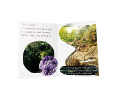

Planting Seeds Across The West
Planting Seeds Across The West
Exploring Our Local Blooms
Conversations From The Garden
Community Gardening Resources
Grow Your Knowledge
ABOUT THE GARDEN
TENDING TO WESTERN SYDNEY CREATIVITY * TENDING TO WESTERN SYDNEY CREATIVITY * TENDING TO WESTERN SYDNEY CREATIVITY * TENDING TO WESTERN SYDNEY CREATIVITY * TENDING TO WESTERN SYDNEY CREATIVITY * TENDING TO WESTERN SYDNEY CREATIVITY * TENDING TO WESTERN SYDNEY CREATIVITY * TENDING TO WESTERN SYDNEY CREATIVITY *
ABOUT THE GARDEN
PLANTING THE SEEDS OF ACTION FOR OUR COLLECTIVE FUTURES PLANTING THE SEEDS OF ACTION FOR OUR COLLECTIVE FUTURES